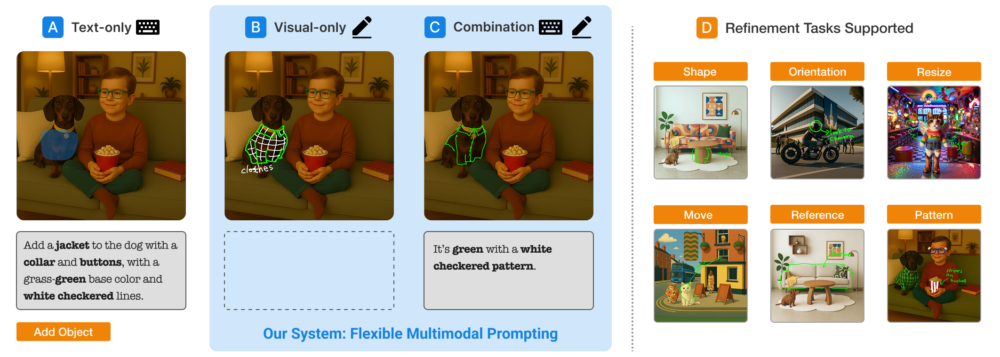

Enhancing Generative AI Image Refinement with Scribbles and Annotations: A Comparative Study of Multimodal Prompts

(opens in new tab)
Venue. IUI (2026)
Abstract. Generative AI (GenAI) image tools are increasingly used in design practice, enabling rapid ideation but offering limited support for refinement tasks such as adjusting layout, scale, or visual attributes. While text prompts and inpainting allow localized edits, they often remain inefficient or ambiguous for precise, in-context, and iterative refinement -- motivating the exploration of alternative methods. This work examines how pen-based scribbles and annotations can enhance GenAI image refinement. A formative study with seven professional designers informed a prototype supporting three input modalities: text-only, visual-only, and combined prompting. A within-subjects study with 30 designers and design students compared these modalities across closed- and open-ended tasks, evaluating expressiveness, efficiency, workload, user experience, iteration, and multimodal strategies. Visual prompts improved clarity and speed for spatial edits while reducing workload, whereas text remained effective for semantic and global changes. The combined modality received the highest overall ratings, enabling complementary use, balancing spatial precision with semantic detail, and supporting smoother iteration. Task-specific preferences also emerged: adding new objects often required both modalities, while moving or modifying elements was typically handled through visual input. This work contributes (1) an empirical comparison of multimodal prompting for GenAI refinement, (2) a prototype integrating scribbles and annotations, and (3) insights into designers' multimodal strategies to inform future GenAI interfaces that better support refinement in GenAI-supported design workflows.
Link to this page: